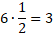
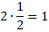
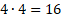
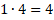

What You Should Know - Padcaster: Translation, Please
 Important Vocabulary
Important Vocabulary
- Translate - to change words into a different language
- Scale Factor - a ratio of the length of the side of a figure compared to the length of the corresponding side of a different figure
- Scale Drawing - a picture of a real-life object drawn at a smaller scale, representing measurements of the actual object
- Corresponding Sides - when two shapes have the same shape and matching sides
- Green Screen - video recording technology used to change the background of a video
Translations
You will have the opportunity to translate sentences into the native languages you “travel” to during your travel show. To translate means to change words into a different language.
For instance:
| English | Danish |
| Safe travels! | Sikre rejser! |
Green Screen Technology
In this project, you will use a green screen included in the Padcaster Studio Kit to record your travel show. A green screen is video recording technology used to change the background of a video. These are often used when creating a video or movie using special effects. Many popular movies have used green screen technology to film many of the scenes.
/Padcaster_GreenScreen_Pixabay.jpg "green screen")
Scale Factor
You will be using a scale factor to create a scale drawing. The scale drawing will represent a monument you travel to and will resemble a piece of artwork often found in touristy cities around the world.
A scale factor is a ratio of the length of the side of a figure compared to the length of the corresponding side of a different figure. Corresponding sides occur when two shapes have the same shape and matching sides.
/Padcaster_CorrespondingSides_CLS.png "corresponding sides")
If the goal is to make the figure smaller, the scale factor is going to be less than 1. The new measurements must go with the corresponding side.
/Padcaster_ScaleFactorExample_CLS.png "smaller figure")


If the goal is to make the figure larger, the scale factor is going to be larger than 1. The new measurements must go with the corresponding side.
/Padcaster_ScaleFactorExample2_CLS.png "larger figure")


A scale drawing is a picture of a real-life object figure at a smaller scale, representing measurements of the actual object.
/Padcaster_ScaleDrawingWithMeasurements_Pexels.jpg "scale drawing with measurements")
Career Connection and Real-World Application
Souvenirs
Souvenirs are sold and collected all over the world. Souvenirs are often known as collectables, mementos, or keepsakes. Souvenir makers create things such as magnets, drawings, paintings, glasses, figurines, mugs, clocks, flags, and more. Some souvenir makers are local to their area, such as a clockmaker in the Black Forest of Germany. Some souvenir makers are located in other countries and ship the items around the world. Souvenir makers have to measure carefully to ensure any life-like souvenirs are proportional to the actual person or monument.
/Padcaster_Souvenir_Pixabay.png "souvenir maker")
Travel Show Host/Crew
A travel show host can have a lot of different responsibilities. This position is often known as a travel presenter. This individual is in front of the camera. The travel presenter visits many different places all over the world while filming themselves visiting significant places and meeting locals to learn more about the culture. The travel presenter shares these cultures with the rest of the world. To become a travel presenter, production companies look for someone who enjoys traveling, is comfortable in front of the camera, and has a friendly personality. Most often, experience in other areas of hosting or filming are preferred to become a travel presenter. Other career opportunities on a travel show may include travel planning, camera, sound, producer, director, and editor. It is common for any of these career fields to deal with scale factors when working with maps and other aspects of traveling in a foreign country.
/Padcaster_TravelPresenter_Pixabay.jpg "travel presenter")